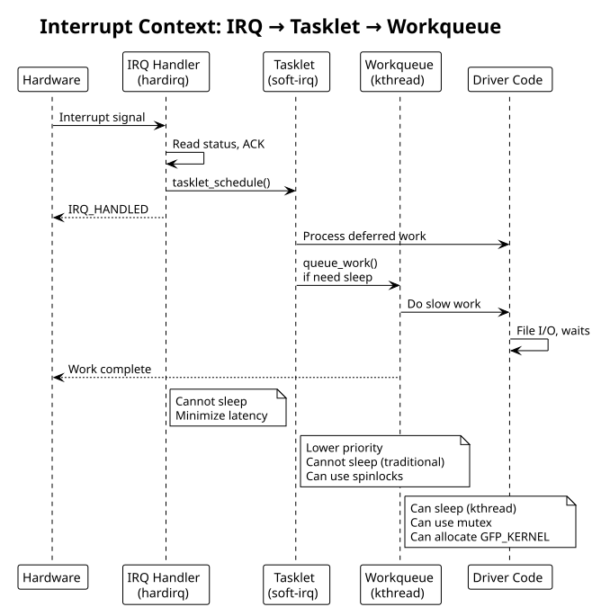

Performance Considerations
Table of Contents
- 1. Memory Efficiency
- 2. Synchronization: Spinlocks
- 3. Tasklets: Deferred Soft IRQ
- 4. Workqueues: Delayed Kernel Threads
- 5. RCU (Read-Copy-Update)
- 6. Lockless Patterns
- 7. Per-CPU Data
- 8. Memory Barriers
- 9. Example: Optimized device driver with deferred work
- 10. Interrupt Context Hierarchy Diagram
- 11. See Also
Driver performance: memory layout, synchronization (spinlocks, tasklets, workqueues), RCU, lockless patterns.
1. Memory Efficiency
__init and __exit sections are freed after use:
#+begin_src c / Freed after init (for built-in) / module load static void __init setup_tables(void) { / one-time initialization }
/ Freed after module unload (only applicable to modules) static void __exit cleanup_tables(void) { / cleanup }
// Check memory savings grep my_driver /proc/meminfo #+end_str>
devm_ allocators auto-free on error or device removal:
#+begin_src c // Preferred: automatic cleanup on probe failure void *buf = devm_kmalloc(&pdev->dev, size, GFP_KERNEL);
/ Legacy: manual cleanup required void *buf = kmalloc(size, GFP_KERNEL); / … must explicitly kfree(buf) #+end_str>
2. Synchronization: Spinlocks
Critical section protection (disables preemption, not suitable for long operations):
#+begin_src c struct my_dev { spinlock_t lock; u32 register_cache; };
// Static initialization static DEFINE_SPINLOCK(global_lock);
// Or in structures spin_lock_init(&dev->lock);
/ Lock/unlock unsigned long flags; spin_lock_irqsave(&dev->lock, flags); / critical section — cannot sleep dev->register_cache = readl(dev->base + REG); spin_unlock_irqrestore(&dev->lock, flags);
/ Read/write spinlocks (multiple readers, single writer) rwlock_t rw_lock; read_lock(&rw_lock); / … multiple readers allowed read_unlock(&rw_lock);
write_lock(&rw_lock); // … exclusive access write_unlock(&rw_lock); #+end_str>
3. Tasklets: Deferred Soft IRQ
Schedule work at soft-IRQ priority (runs after hardirq handlers):
#+begin_src c struct my_dev { struct tasklet_struct tasklet; };
static void my_tasklet_handler(unsigned long arg) { struct my_dev *dev = (struct my_dev *)arg;
/ Process deferred work (from interrupt handler) / CAN sleep in newer kernels with tasklet_setup(), but traditionally cannot }
/ Initialize tasklet_init(&dev->tasklet, my_tasklet_handler, (unsigned long)dev); / or newer: tasklet_setup(&dev->tasklet, my_tasklet_handler);
// Schedule from IRQ handler static irqreturn_t my_isr(int irq, void *dev_id) { struct my_dev *dev = dev_id;
/ Handle immediate hardware interrupt u32 status = readl(dev->base + IRQ_STATUS); writel(status, dev->base + IRQ_STATUS); / ack
// Schedule deferred work tasklet_schedule(&dev->tasklet);
return IRQ_HANDLED; }
/ Disable/enable at runtime tasklet_disable(&dev->tasklet); / … driver shutdown tasklet_enable(&dev->tasklet);
// Cleanup tasklet_kill(&dev->tasklet); #+end_str>
4. Workqueues: Delayed Kernel Threads
For longer deferred work (can sleep, block):
#+begin_src c struct my_dev { struct work_struct work; struct workqueue_struct *wq; };
static void my_work_handler(struct work_struct *work) { struct my_dev *dev = container_of(work, struct my_dev, work);
// Can sleep, wait for locks, etc. msleep(100);
// Access hardware writel(1, dev->base + COMMAND); }
/ Initialize INIT_WORK(&dev->work, my_work_handler); / or custom workqueue: dev->wq = create_singlethread_workqueue("my_driver"); INIT_WORK(&dev->work, my_work_handler);
// Schedule from IRQ static irqreturn_t my_isr(int irq, void *dev_id) { struct my_dev *dev = dev_id; queue_work(dev->wq, &dev->work); return IRQ_HANDLED; }
// Delayed work static void schedule_delayed_work(struct my_dev *dev) { INIT_DELAYED_WORK(&dev->dwork, my_work_handler); queue_delayed_work(dev->wq, &dev->dwork, msecs_to_jiffies(100)); }
// Cleanup cancel_work_sync(&dev->work); destroy_workqueue(dev->wq); #+end_str>
5. RCU (Read-Copy-Update)
Ultra-low-overhead read locks for read-heavy data:
#+begin_src c struct my_data { struct rcu_head rcu; int value; };
static struct my_data *global_data;
// Read-side (very fast, no locks) rcu_read_lock(); struct my_data *data = rcu_dereference(global_data); int val = data->value; rcu_read_unlock();
// Write-side (publish new version) struct my_data *new_data = kmalloc(sizeof(*new_data), GFP_KERNEL); new_data->value = 42; rcu_assign_pointer(global_data, new_data);
// Wait for all RCU readers to exit synchronize_rcu();
/ Free old version kfree_rcu(old_data, rcu); / auto-frees after RCU grace period #+end_str>
RCU is ideal for config updates, routing tables, where reads vastly outnumber writes.
6. Lockless Patterns
Atomic operations (no locks, hardware-supported):
#+begin_src c atomic_t counter = ATOMIC_INIT(0);
atomic_inc(&counter); atomic_dec(&counter); int val = atomic_read(&counter); atomic_set(&counter, 10);
// Atomic bitops set_bit(0, &flags); clear_bit(0, &flags); test_bit(0, &flags);
// CAS (compare-and-swap) atomic_cmpxchg(&val, old, new); #+end_str>
7. Per-CPU Data
Each CPU gets its own copy (no synchronization overhead):
#+begin_src c static DEFINE_PER_CPU(struct stats, cpu_stats);
// On IRQ handler this_cpu_inc(cpu_stats.packets); this_cpu_add(cpu_stats.bytes, len);
// Read all CPUs for_each_possible_cpu(cpu) { struct stats *s = per_cpu_ptr(&cpu_stats, cpu); total_packets += s->packets; } #+end_str>
8. Memory Barriers
Ensure proper ordering of memory accesses:
#+begin_src c // Write barrier (all previous writes complete before next write) wmb();
// Read barrier rmb();
// Full barrier (both read and write) mb();
/ Acquire/release semantics (preferred modern approach) smp_store_release(&ptr, value); / write with release semantics value = smp_load_acquire(&ptr); // read with acquire semantics #+end_str>
9. Example: Optimized device driver with deferred work
#+begin_src c struct optimized_dev { struct device *dev; void __iomem *base; spinlock_t reg_lock; struct tasklet_struct rx_tasklet; struct workqueue_struct *work_queue; struct work_struct delayed_work; atomic_t packet_count; };
// ISR: minimal work, schedule tasklet static irqreturn_t my_isr(int irq, void *dev_id) { struct optimized_dev *dev = dev_id; u32 status = readl(dev->base + STATUS);
if (status & RX_READY) { writel(RX_ACK, dev->base + STATUS); tasklet_schedule(&dev->rx_tasklet); // defer to soft-irq }
return IRQ_HANDLED; }
// Tasklet: process packets (soft-irq context) static void rx_tasklet(unsigned long arg) { struct optimized_dev *dev = (struct optimized_dev *)arg;
while (readl(dev->base + RX_COUNT)) { // Fast packet processing u32 pkt = readl(dev->base + RX_DATA); atomic_inc(&dev->packet_count); } }
// Workqueue: slow operations (can sleep) static void delayed_handler(struct work_struct *work) { struct optimized_dev *dev = container_of(work, struct optimized_dev, delayed_work);
// Slow operations (e.g., file I/O, allocations) msleep(10); dev_info(dev->dev, "processed %d packets\n", atomic_read(&dev->packet_count)); } #+end_str>
## Performance Profiling
#+begin_src bash
cat /proc/interrupts | grep my_driver
grep spinlock_contention /proc/lock_stat
echo "my_function" > /sys/kernel/debug/tracing/set_ftrace_filter echo 1 > /sys/kernel/debug/tracing/tracing_on
cat /sys/kernel/debug/tracing/trace
perf record -F 99 -g – my_workload perf report #+end_str>
10. Interrupt Context Hierarchy Diagram

11. See Also
- Debugging Techniques
- Kernel Module Fundamentals
- Interrupt Handling — what belongs in the hard IRQ vs the deferred work covered here